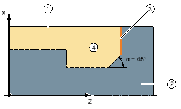
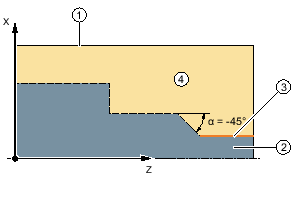
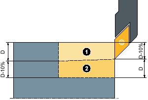
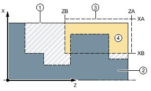
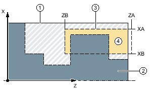

Funktion
Wenn Sie Konturen in Längs- bzw. Planrichtung oder konturparallel bearbeiten möchten, nutzen Sie die Funktion "Abspanen".
Rohteil
Beim Abspanen berücksichtigt der Zyklus ein Rohteil, das aus einem Zylinder, einem Aufmaß auf die Fertigteilkontur oder einer beliebigen Rohteilkontur bestehen kann. Die Rohteilkontur müssen Sie als eigenen geschlossenen Konturzug vor der Fertigteilkontur definieren.
| Hinweis |
|
Um Kollisionen von Werkzeug und Werkstück durch Positionierbewegungen zu vermeiden, muss das programmierte Rohteil mit dem realen Rohteil übereinstimmen. |
Wenn die Rohteil- und die Fertigteilkontur sich nicht schneiden, legt der Zyklus den Abschluss zwischen Rohteil und Fertigteil fest. Wenn der Winkel zwischen der Geraden und der Z-Achse größer 1° ist, wird der Abschluss nach oben gelegt, wenn der Winkel kleiner/gleich 1° ist, wird der Abschluss zur Seite gelegt.
 1°: Abschluss zwischen Roh- und Fertigteil nach oben">① | Rohteil |
② | Fertigteil |
③ | Konturabschluss |
④ | Bearbeitung |
α > 1°: Abschluss zwischen Roh- und Fertigteil nach oben
① | Rohteil |
② | Fertigteil |
③ | Konturabschluss |
④ | Bearbeitung |
α ≤ 1°: Abschluss zwischen Roh- und Fertigteil seitlich
Voraussetzung
Bei einem G-Code-Programm ist mindestens ein CYCLE62 vor dem CYCLE952 erforderlich.
Ist CYCLE62 nur einmal vorhanden, dann handelt es sich um die Fertigteilkontur.
Ist CYCLE62 zweimal vorhanden, dann ist der erste Aufruf die Roteilkontur und der zweite Aufruf die Fertigteilkontur (siehe auch Kapitel "Programmierung").
| Hinweis |
Abarbeiten von externen MedienWenn Sie Programme von einem externen Laufwerk (z. B. lokales Laufwerk oder Netzlaufwerk) abarbeiten lassen wollen, benötigen Sie die Funktion "Abarbeiten vom externen Speicher (EES)". |
Nachziehen an der Kontur
Um zu verhindern, dass beim Schruppen Restecken stehen bleiben, können Sie "immer an der Kontur nachziehen" lassen. Hierbei werden die Nasen weggenommen, die bei jedem Schnitt am Ende an der Kontur stehen bleiben, bedingt durch die Schneidegeometrie. Mit der Einstellung "Nachziehen bis zum vorherigen Schnittpunkt" kann die Bearbeitung der Kontur beschleunigt werden. Entstehende Restecken werden dabei allerdings nicht erkannt und bearbeitet. Kontrollieren Sie deshalb das Verhalten vor der Bearbeitung unbedingt mit Hilfe der Simulation.
Bei der Einstellung "automatisch" wird immer dann nachgezogen, wenn der Winkel zwischen Schneide und Kontur einen bestimmten Wert überschreitet. Der Winkel ist in einem Maschinendatum festgelegt.
| | Maschinenhersteller Beachten Sie hierzu die Angaben des Maschinenherstellers. |
Wechselnde Schnitttiefe
Statt mit konstanter Schnitttiefe D können Sie auch mit wechselnder Schnitttiefe arbeiten, um die Werkzeugschneide nicht ständig gleich zu belasten. Dadurch können Sie die Standzeit des Werkzeugs erhöhen.
① | Erster Schnitt |
② | Zweiter Schnitt |
Wechselnde Schnitttiefe
Der Prozentsatz für die wechselnde Schnitttiefe ist in einem Maschinendatum festgelegt.
| | Maschinenhersteller Beachten Sie hierzu die Angaben des Maschinenherstellers. |
Schnittaufteilung
Möchten Sie vermeiden, dass durch Konturkanten bei der Schnittaufteilung sehr dünne Schnitte entstehen, können Sie die Schnittaufteilung an Konturkanten ausrichten. Bei der Bearbeitung wird die Kontur dann durch die Kanten in einzelne Abschnitte aufgeteilt und für jeden Abschnitt erfolgt die Schnittaufteilung getrennt.
Bearbeitungsbereich eingrenzen
Wenn Sie z. B. einen bestimmten Bereich der Kontur mit einem anderen Werkzeug bearbeiten möchten, können Sie den Bearbeitungsbereich eingrenzen, so dass nur der gewünschte Teil der Kontur bearbeitet wird. Sie können zwischen 1 und 4 Grenzlinien definieren.
Die Grenzlinien dürfen hierbei die Kontur, auf der Seite, die der Bearbeitung zugewandt ist, nicht schneiden.
Das Eingrenzen wirkt beim Schruppen und Schlichten gleich.
Beispiel der Eingrenzung bei einer Längs-Außenbearbeitung
① | Rohteil |
② | Fertigteil |
③ | Eingrenzung |
④ | Bearbeitung |
Erlaubte Eingrenzung: Eingrenzungslinie XA liegt außerhalb der Rohteilkontur
① | Rohteil |
② | Fertigteil |
③ | Eingrenzung |
④ | Bearbeitung |
Nicht erlaubte Eingrenzung: Eingrenzungslinie XA liegt innerhalb der Rohteilkontur
Vorschubunterbrechung
Wenn Sie verhindern möchten, dass bei der Bearbeitung zu lange Späne entstehen, können Sie eine Vorschubunterbrechung programmieren. Der Parameter DI gibt den Weg an, nach dem die Vorschubunterbrechung erfolgen soll.
Die Unterbrechungszeit bzw. der Rückzugsweg sind in Maschinendaten festgelegt.
| | Maschinenhersteller Beachten Sie hierzu die Angaben des Maschinenherstellers. |
Restmaterialbearbeitung / Namenskonventionen
G-Code-Programm
Bei mehrkanaligen Systemen werden an die Namen der zu generierenden Programme von den Zyklen ein "_C" und eine zweistellige Nummer des konkreten Kanals angehängt, z. B. für Kanal 1 "_C01".
Deshalb darf der Name des Hauptprogramms nicht auf "_C" und eine zweistellige Nummer enden. Dies wird von den Zyklen überwacht.
Bei Programmen mit Restbearbeitung ist bei der Angabe des Namens für die Datei, die die aktualisierte Rohteilkontur beinhaltet, zu beachten, dass diese ohne die angehängten Zeichen ("_C" und zweistellige Nummer) erfolgen muss.
Bei Systemen mit einem Kanal wird von den Zyklen keine Namenserweiterung bei den zu generierenden Programmen vorgenommen.
| Hinweis |
G-Code-ProgrammeBei G-Code-Programmen werden die zu generierenden Programme, die keine Pfadangabe enthalten, in dem Verzeichnis abgelegt, in dem sich das Hauptprogramm befindet. Dabei ist zu beachten, dass vorhandene Programme im Verzeichnis, die den gleichen Namen wie die zu generierenden Programme haben, überschrieben werden. |
Eingabe einfach
Sie haben die Möglichkeit, die Fülle der Parameter für einfache Bearbeitungen mit Hilfe des Auswahlfeldes "Eingabe" auf die wichtigsten Parameter zu reduzieren. In diesem Modus "Eingabe einfach" erhalten die ausgeblendeten Parameter einen festen, nicht einstellbaren Wert.
| | Maschinenhersteller Verschiedene festgelegte Werte können über Settingdaten vorbelegt werden. Beachten Sie hierzu die Angaben des Maschinenherstellers. |
Wenn es die Programmierung eines Werkstücks erfordert, können Sie über "Eingabe komplett" sämtliche Parameter einblenden und verändern.